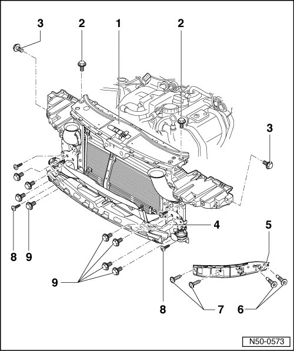
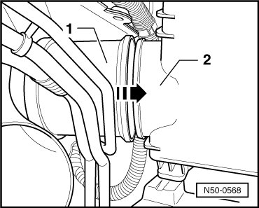

Lock Carrier
Lock Carrier
--> [ Lock Carrier with Attachments ]
Lock Carrier with Attachments
Removing
• Support piece was removed for clarity.

- Front bumper, vehicles through 10.2006, removing, refer to --> [ Bumper Cover ] Front Bumper, through 10.2006
- Front bumper, vehicles from 11.2006, removing, refer to --> [ Bumper Cover Assembly Overview ]
- Remove the wheel housing liner. Refer to --> [ Front Wheel Housing Liner Assembly Overview ] Service and Repair
- Disengage release in coupling. Refer to --> [ Release, Disconnecting ] Hood Overview
- In vehicles with charge air cooler, disconnect pressure hoses.
- Disconnect the electrical harness connectors present.
- Loosen seal on lock carrier.
- Drain the coolant and disconnect coolant line.
- Disconnect the transmission fluid cooler lines.
- Disconnect condenser lines
- Remove the bolts - 6 - and - 7 - on left and right and remove side guide trims - 5 - from fenders.
- Remove bolts - 8 - and - 9 -.
- Remove the bolts - 2 - and - 3 - and lift out lock carrier - 1 - together with bumper carrier - 4 - with a second mechanic.
CAUTION!
Do not start the engine when the A/C system or coolant lines are disconnected.
• Do not hang the condenser and hydraulic oil cooler by the lines.
• Do not kink the condenser and hydraulic lines.
Installation
- When installing the lock carrier, make sure the air intake pipes - 1 - on the air filters - 2 - fit correctly near the wheel housing - arrow -.

To install, perform the steps used for removal in reverse order.
- Align lock carrier at longitudinal members and between fenders.